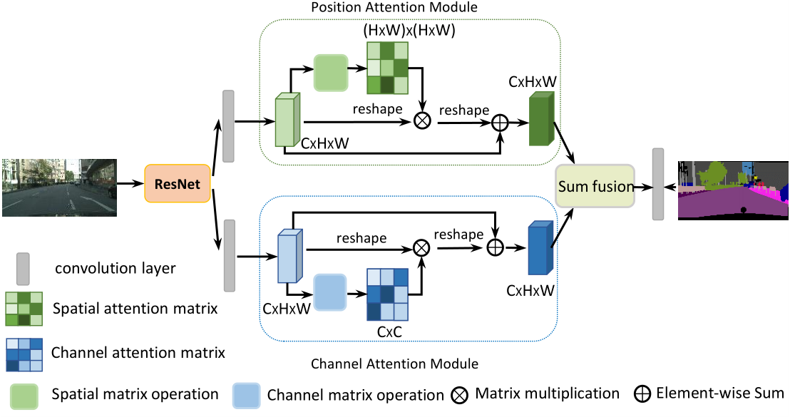
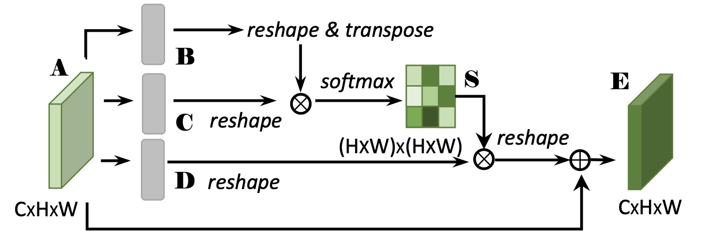
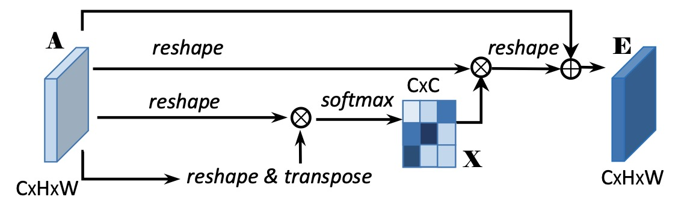

关于作者
关于作者
DANet
DANet是将
创新点
引入空间注意力和通道注意力
注意力
之前我们在学习SENet的时候了解过
整体结构
网络的整体结构示意图如下所示

1、网络首先使用Dilated ResNet作为主干网络，用于特征提取。和DeepLab V2一样，最终获得1/8将采样尺寸的特征图。
2、将特征图同时送入空间和通道注意力机制，得到加权后的特征图。
3、通过元素相加融合两个特征图，进而通过卷积得到最终的预测输出。
Position Attention Module
位置注意力模块如下图所示，目的在于获得空间加权的特征输出E。

该模块具体流程如下:
1、特征图A[C, H, W]首先分别通过3个卷积层得到3个特征图B,C,D。输出尺寸为[C, H, W]。
2、将B，C先reshape为[C, H×W],再将B进行转置，获得输出维度[H×W, C]。将两者相乘，再通过softmax获得空间特征映射S（Spatial Attention map）,尺寸为[H×W, H×W]。
3、将D reshape为[C, H×W]，再和S的转置进行矩阵乘，获得[C, H×W]的输出，再乘以尺度系数α，最后reshape 为 [C, H, W]。 此处α 初始化为0，并在训练过程中逐渐增加。
4、将步骤3的输出与输入A相加，得到最终输出E。
该模块代码实现如下
class PAM_Module(Module):
""" Position attention module"""
def __init__(self, in_dim):
super(PAM_Module, self).__init__()
self.chanel_in = in_dim
self.query_conv = Conv2d(in_channels=in_dim, out_channels=in_dim//8, kernel_size=1)
self.key_conv = Conv2d(in_channels=in_dim, out_channels=in_dim//8, kernel_size=1)
self.value_conv = Conv2d(in_channels=in_dim, out_channels=in_dim, kernel_size=1)
self.gamma = Parameter(torch.zeros(1))
self.softmax = Softmax(dim=-1)
def forward(self, x):
"""
inputs :
x : input feature maps( B X C X H X W)
returns :
out : attention value + input feature
attention: B X (HxW) X (HxW)
"""
m_batchsize, C, height, width = x.size()
proj_query = self.query_conv(x).view(m_batchsize, -1, width*height).permute(0, 2, 1)
proj_key = self.key_conv(x).view(m_batchsize, -1, width*height)
energy = torch.bmm(proj_query, proj_key)
attention = self.softmax(energy)
proj_value = self.value_conv(x).view(m_batchsize, -1, width*height)
out = torch.bmm(proj_value, attention.permute(0, 2, 1))
out = out.view(m_batchsize, C, height, width)
out = self.gamma*out + x
return out
Channel Attention Module
通道注意力模块如下图所示，目的在于对通道维特征进行筛选加权。

该过程类似与PAM，区别在于获得通道注意力特征图X，尺寸为[C, C]。
接着把X的转置[C, C]与reshape的A[C, N]做矩阵乘法，再乘以尺度系数β，再reshape为原来形状，最后与A相加得到最后的输出E。
CAM的代码实现如下
class CAM_Module(Module):
""" Channel attention module"""
def __init__(self, in_dim):
super(CAM_Module, self).__init__()
self.chanel_in = in_dim
self.gamma = Parameter(torch.zeros(1))
self.softmax = Softmax(dim=-1)
def forward(self,x):
"""
inputs :
x : input feature maps( B X C X H X W)
returns :
out : attention value + input feature
attention: B X C X C
"""
m_batchsize, C, height, width = x.size()
proj_query = x.view(m_batchsize, C, -1)
proj_key = x.view(m_batchsize, C, -1).permute(0, 2, 1)
energy = torch.bmm(proj_query, proj_key)
energy_new = torch.max(energy, -1, keepdim=True)[0].expand_as(energy)-energy
attention = self.softmax(energy_new)
proj_value = x.view(m_batchsize, C, -1)
out = torch.bmm(attention, proj_value)
out = out.view(m_batchsize, C, height, width)
out = self.gamma*out + x
return out
优缺点
DANet中的注意力机制设计简单明了，可以适应不同尺寸输入。 可以根据输入的特征图动态地调整权重，从而使模型更加关注有用的信息，忽略无用的信息。
但DANet计算量过大，参数过多，所以难以向SE Block一样用在网络的多个位置，仅可使用在特征提取的高维来减少计算量。 此外还可以在第一步获得特征图B，C，D的时候通过卷积降低通道维度，减少计算量。上文中PAM的代码就是这样实现的。
讨论
等后续学习Transformer之后可以感觉本文提出的注意力机制和Transformer有一定相似度。你可以把三个特征图B，C，D作为Q，K，V。 同样是Q和K的转置相乘，然后通过softmax，最后和V相乘。
如果使用公式表示就更明显了，DANet在获得空间权重映射的操作可以表示为：
而Transformer的注意力机制可以表示为：
参考
https://github.com/junfu1115/DANet